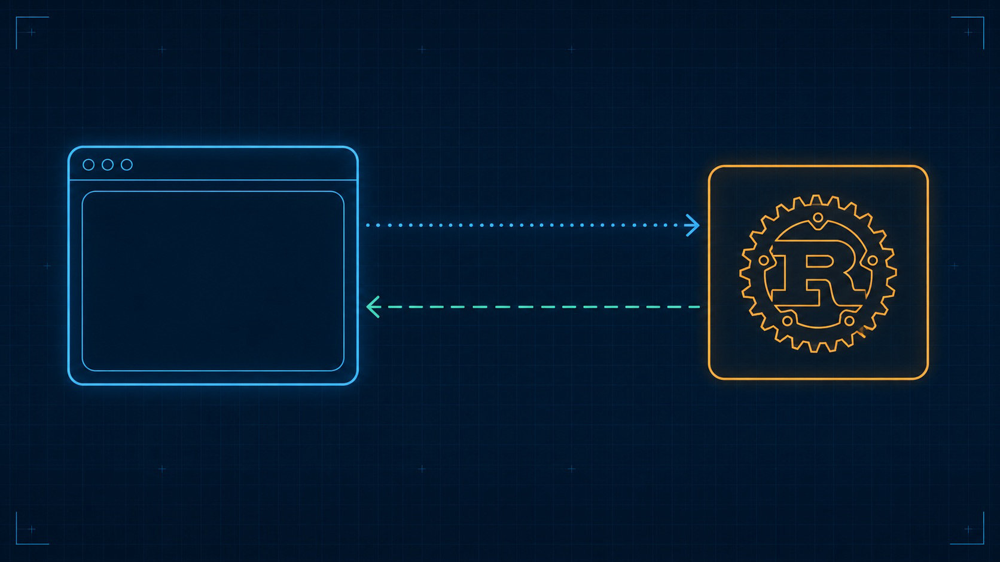

TauriCross-Platform Apps
A conceptual map for building desktop (and mobile) apps with a Rust core and any web frontend — written so you can think clearly about the architecture and direct a coding agent to build it, instead of memorizing an API surface.

A wide technical blueprint-style illustration on a deep navy ground with a faint cyan grid: on the left, a rounded rectangle schematic panel representing a browser/webview window (a simple minimal browser-chrome outline — a thin title bar and one rounded content pane, no readable text), glowing cyan; on the right, a rounded rectangle housing a compact gear/cog emblem representing a Rust core, glowing amber; between the two boxes, two parallel schematic traces connect them like circuit traces on a PCB — a solid, dotted cyan trace with a small arrowhead pointing right (a command, request/response) and a longer-dashed teal trace with a small arrowhead pointing left (an event, publish/subscribe). Clean vector line-art, engineering-schematic aesthetic, cyan (#46b1e0), soft teal (#7fd1c8) and amber (#f0a15a) linework on navy (#0c2233), generous whitespace, no baked-in body text or logos. Target size ~1280x720px, 16:9 landscape; compose for a hero banner with the subject centered and safe margins — it is letterboxed into a 16:9 box, so keep nothing important near the edges.
Generate this with your image agent, then drop the file here.
Table of Contents
- What Is Tauri and Why It Existswhy
- High-Level Architecture of a Tauri Apparchitecture
- Core Concepts and Terminologyvocabulary
- Project Structure and Configurationconfig
- Frontend Basics from Tauri's Perspectivefrontend
- Rust Backend Fundamentalsrust
- Communication Patterns: Commands and Eventscomms
- Security Model and Capabilitiessecurity
- Plugins and Sidecarsextend
- Build, Run, and Deploy Workflowship
- Working with Coding Agents on Tauri Projectsagents
- A Minimal End-to-End Examplewalkthrough
- Appendices: Glossary, Patterns, Resourcesreference
Want the dense reference version? Jump to the Cheatsheet.